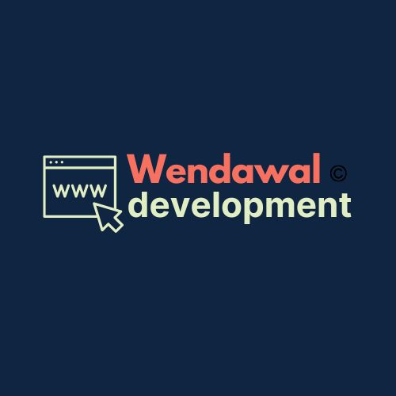
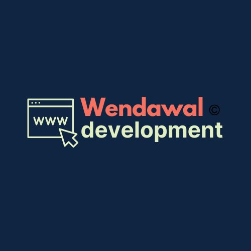

Sobre mim
Meu nome é Eduardo Wundervald, CEO fundador da Wendawal Development, e sou apaixonado por tecnologia e programação desde a minha juventude. Ao longo da minha trajetória, desenvolvi uma forte afinidade com o universo da programação, o que me motivou a me tornar um profissional autodidata e me especializar no desenvolvimento front-end.
Na Wendawal Development, busco sempre trazer inovação, excelência e comprometimento em cada projeto que desenvolvo, garantindo que as entregas atendam aos mais altos padrões de qualidade.
Sou entusiasta do aprendizado contínuo e sempre em busca de novas ferramentas e metodologias para aprimorar meus conhecimentos e oferecer soluções cada vez mais eficientes. O que mais me move é a paixão pelo que faço e o desejo de seguir evoluindo dentro desse vasto e fascinante universo da tecnologia.
 
